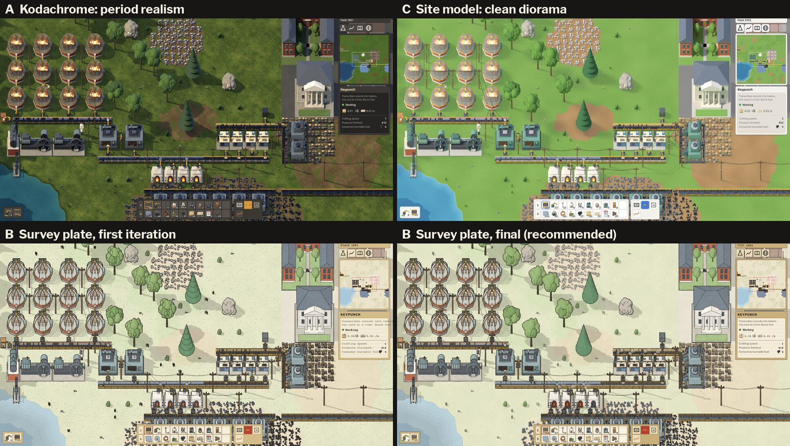
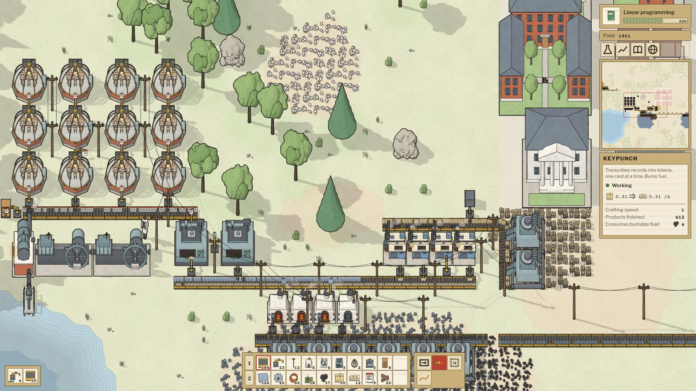
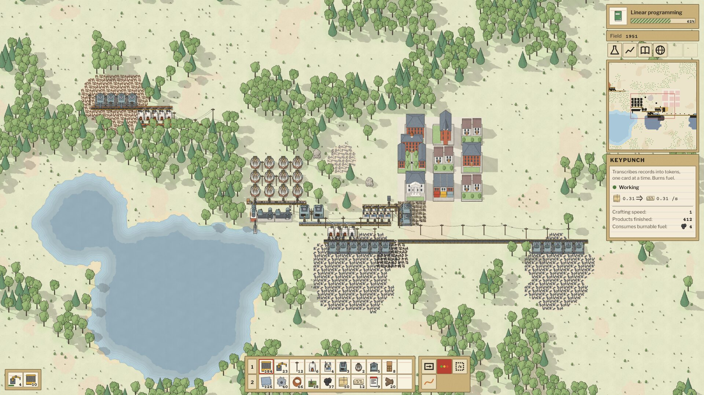
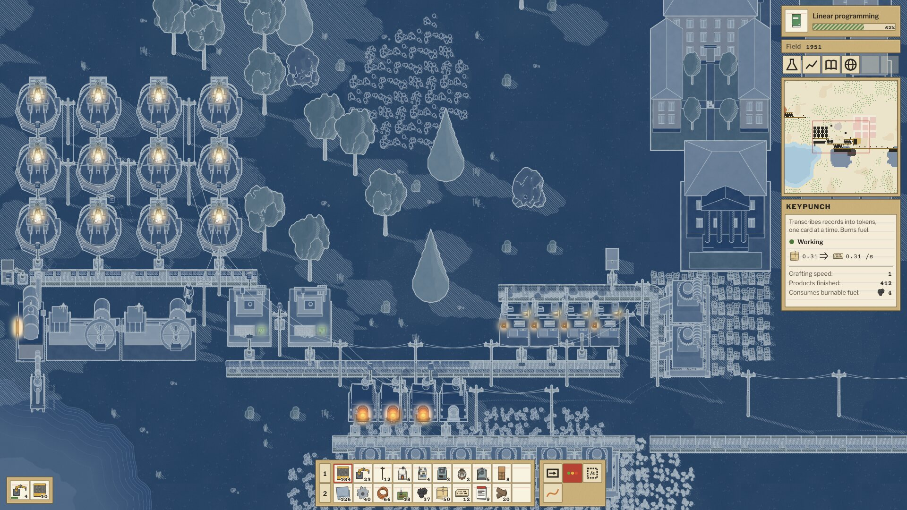
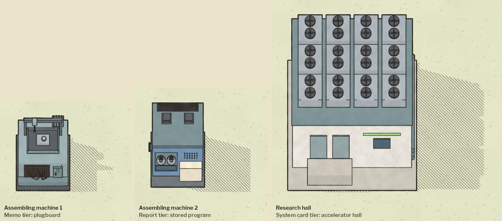

<title>Paperwork Studio</title>
<meta name="claude:viewport-fit-sides" content="cover">
<link rel="preconnect" href="https://fonts.googleapis.com">
<link rel="preconnect" href="https://fonts.gstatic.com" crossorigin>
<link rel="stylesheet" href="https://fonts.googleapis.com/css2?family=IBM+Plex+Mono:wght@400;600&family=IBM+Plex+Sans:ital,wght@0,400;0,600;1,400&display=swap">
<style>
  /* Layout: one narrow reading column, like a typed memo in a ledger binder; sections are filed under tabbed headings. */
  :root {
    --paper: #e9ede4;      /* ledger paper, faint green */
    --sheet: #f6f8f2;      /* a card on the desk */
    --ink: #1c2230;        /* typewriter ink */
    --faint: #5d6675;      /* carbon-copy grey */
    --rule: #c9d3c4;       /* ledger rule */
    --carbon: #3546b5;     /* carbon-paper blue: the one accent */
    --mono: "IBM Plex Mono", ui-monospace, "SFMono-Regular", Menlo, Consolas, monospace;
    --sans: "IBM Plex Sans", "Helvetica Neue", Arial, sans-serif;
  }
  @media (prefers-color-scheme: dark) {
    :root:not([data-theme="light"]) {
      --paper: #121620; --sheet: #1a2030; --ink: #dfe4ec; --faint: #98a1b3; --rule: #2c3446; --carbon: #94a3ff;
      color-scheme: dark;
    }
  }
  :root[data-theme="dark"] {
    --paper: #121620; --sheet: #1a2030; --ink: #dfe4ec; --faint: #98a1b3; --rule: #2c3446; --carbon: #94a3ff;
    color-scheme: dark;
  }
  * { box-sizing: border-box; }
  body {
    background: var(--paper); color: var(--ink);
    font: 16px/1.6 var(--sans);
    padding-left: max(16px, env(safe-area-inset-left, 0px));
    padding-right: max(16px, env(safe-area-inset-right, 0px));
  }
  main { max-width: 1100px; margin: 0 auto; padding-block: 40px 72px; display: grid; gap: 40px; }
  header { display: grid; gap: 6px; }
  .wordmark { font: 600 30px/1.1 var(--mono); letter-spacing: 0.22em; margin: 0; text-wrap: balance; }
  .tagline { font: italic 400 17px/1.4 var(--sans); color: var(--faint); margin: 0; }
  .lede { margin: 10px 0 0; max-width: 65ch; }
  section { display: grid; gap: 14px; }
  h2 {
    font: 600 13px/1 var(--mono); letter-spacing: 0.14em; text-transform: uppercase; color: var(--faint);
    margin: 0; padding-bottom: 8px; border-bottom: 1px solid var(--rule);
  }
  .track {
    background: var(--sheet); border: 1px solid var(--rule); border-radius: 3px;
    padding: 16px 18px; display: grid; gap: 8px; min-width: 0;
  }
  .track h3 { margin: 0; font: 600 18px/1.3 var(--sans); }
  .meta { margin: 0; font: 400 13px/1.4 var(--mono); color: var(--faint); font-variant-numeric: tabular-nums; }
  .track p { margin: 0; max-width: 65ch; }
  audio { width: 100%; }
  .sfx { display: grid; grid-template-columns: repeat(auto-fill, minmax(150px, 1fr)); gap: 8px; }
  .sfx button {
    font: 400 14px/1.3 var(--mono); text-align: left; padding: 9px 10px; min-width: 0;
    border: 1px solid var(--rule); border-radius: 3px; background: var(--sheet); color: var(--ink); cursor: pointer;
  }
  .sfx button:hover { border-color: var(--carbon); }
  .sfx button[aria-pressed="true"] { border-color: var(--carbon); color: var(--carbon); }
  button:focus-visible, audio:focus-visible { outline: 2px solid var(--carbon); outline-offset: 2px; }
  .note { margin: 0; color: var(--faint); font-size: 15px; max-width: 65ch; }
  ul.asks { margin: 0; padding-left: 20px; display: grid; gap: 6px; max-width: 65ch; }
  figure { margin: 0; display: grid; gap: 8px; min-width: 0; }
  figure img { display: block; width: 100%; height: auto; border: 1px solid var(--rule); border-radius: 3px; background: var(--sheet); }
  figcaption { font-size: 15px; color: var(--faint); max-width: 65ch; }
  .pair { display: grid; grid-template-columns: repeat(auto-fit, minmax(min(100%, 420px), 1fr)); gap: 16px; }
  .stop { justify-self: start; font: 600 13px/1 var(--mono); letter-spacing: 0.08em; text-transform: uppercase;
    padding: 9px 12px; border: 1px solid var(--carbon); border-radius: 3px; background: transparent; color: var(--carbon); cursor: pointer; }
</style>

<main>
  <header>
    <p class="wordmark">PAPERWORK</p>
    <p class="tagline">Information is physical.</p>
    <p class="lede">Direction studies for the game's look and sound, made before any game code. Everything here is
      generated on the build server: Blender renders, scripted ink and wash, and music written as rules.</p>
  </header>

  <section aria-labelledby="art">
    <h2 id="art">Art direction</h2>
    <p class="note">Three directions were built as real in-game mocks from procedurally rendered assets: period realism, a
      survey plate, and a clean diorama. The survey plate is recommended. The world is drawn as the survey attached to the
      1945 charter: rendered models washed in three flat tones, then inked and hatched on buff paper. Information items are
      light paper with ink marks and matter is darker pigment, so a belt's contents read by lightness. Working lamps stain
      the paper warm, and at night the plate turns to a cyanotype that the lights colour back in. The same models can be
      rendered in the realism style by switching one shading table, so this choice stays cheap to reverse.</p>
    <figure>
      
      <figcaption>The same base in each direction. A: period realism. C: clean diorama. B: survey plate, first and final iteration.</figcaption>
    </figure>
    <figure>
      
      <figcaption>Survey plate at normal zoom, with the HUD drawn as 1945 federal paperwork.</figcaption>
    </figure>
    <div class="pair">
      <figure>
        
        <figcaption>Zoomed out to 0.3×: woodland tint, water-lining and the town in map conventions.</figcaption>
      </figure>
      <figure>
        
        <figcaption>Night: the plate becomes a cyanotype, and lamps colour it back in.</figcaption>
      </figure>
    </div>
    <figure>
      
      <figcaption>One pen across the eras: the machines carry the period, the drawing stays the same.</figcaption>
    </figure>
  </section>

  <section aria-labelledby="music">
    <h2 id="music">Music</h2>
    <p class="note">Process music played by the history of machine music: rules rather than a fixed score, with instruments
      that advance with the game's Literature year. Each piece is one render of those rules, so in play no two runs sound
      the same. Mastered to −16 LUFS.</p>
    <article class="track">
      <h3>1945: Relays and tubes</h3>
      <p class="meta">Era I · the charter piece · piano, strings, clarinet, harp, glockenspiel · 2:25</p>
      <audio controls preload="none" src="paperwork-era1-1945.opus"></audio>
      <p>The motif is stated once on the piano, then five piano loops of unequal lengths take it apart, never lining up the same
        way twice. Strings voice-lead under a pentatonic field; a clarinet line in Pärt's tintinnabuli manner follows, then harp,
        a climax in the violins and a quiet coda.</p>
    </article>
    <article class="track">
      <h3>1962: Tape and oscillators</h3>
      <p class="meta">Era II · marimba tape loops, vibraphone, organ, sine drones, tape · 2:26</p>
      <audio controls preload="none" src="paperwork-era2-1962.opus"></audio>
      <p>A marimba loop is built up note by note. A second copy runs 0.4% fast, so it drifts out of phase and, being tape,
        slightly sharp. Organ figures, now kept to the drone's consonances, ride a tape echo that clears at every chord change over a just-intonation sine drone (revised after your first listen); two Risset bells sound, and the
        1945 motif returns on tape at half speed.</p>
    </article>
    <article class="track">
      <h3>Takeoff</h3>
      <p class="meta">Era V · the loop closes, then the takeoff · 2:27</p>
      <audio controls preload="none" src="paperwork-takeoff.opus"></audio>
      <p>The 1945 motif in five voices, one per era, at tempi 1 : 4/3 : 2 : 3 : 4. All five arrive on one D at the same
        instant, the only moment every era sounds together. Then an accelerando without end on a piano tuned to the harmonic
        series of D, doubling in tempo whenever research doubles. Then one low D.</p>
    </article>
  </section>

  <section aria-labelledby="sfx-h">
    <h2 id="sfx-h">Sound effects</h2>
    <p class="note">Prototypes for the first playable slice: card stock, keys, relays, motors. Each button plays one variant;
      loops repeat until stopped.</p>
    <div class="sfx" id="sfx"></div>
    <button class="stop" id="stop" type="button">Stop</button>
  </section>

  <section aria-labelledby="asks">
    <h2 id="asks">Useful to hear back</h2>
    <ul class="asks">
      <li>Does the survey plate feel right, or would you rather have period realism (A)?</li>
      <li>Could you look at a light paper map for a twelve-hour session?</li>
      <li>Would you leave the 1945 piece on for an hour of building?</li>
      <li>Is Era II's darker balance too heavy?</li>
      <li>Does the takeoff's harmonic-series piano sound luminous, or just out of tune?</li>
      <li>Do any effects grate when imagined on repeat a thousand times?</li>
    </ul>
  </section>
</main>

<script>
  const SFX = [
    ['ui_click', 3], ['ui_hover', 2], ['build_small', 3], ['build_medium', 3], ['build_large', 2], ['deconstruct', 3],
    ['mine_ore', 4], ['inserter_swing', 4], ['keypunch_loop', 0], ['belt_loop', 0], ['research_complete', 0],
    ['alert', 0], ['error', 2], ['footstep_grass', 4], ['footstep_concrete', 4],
  ];
  const box = document.getElementById('sfx');
  let current = null, currentBtn = null;
  function stop() {
    if (current) { current.pause(); current = null; }
    if (currentBtn) { currentBtn.setAttribute('aria-pressed', 'false'); currentBtn = null; }
  }
  for (const [name, n] of SFX) {
    const files = n ? Array.from({ length: n }, (_, i) => `sfx/${name}_${i + 1}.ogg`) : [`sfx/${name}.ogg`];
    files.forEach((f, i) => {
      const b = document.createElement('button');
      b.type = 'button';
      b.id = `sfx-${name}-${i}`;
      b.setAttribute('aria-pressed', 'false');
      b.textContent = name.replace(/_loop$/, '').replace(/_/g, ' ') + (n ? ` ${i + 1}` : '') + (name.endsWith('loop') ? ' (loop)' : '');
      b.addEventListener('click', () => {
        stop();
        current = new Audio(f);
        current.loop = name.endsWith('loop');
        current.addEventListener('ended', () => { if (currentBtn === b) stop(); });
        current.play().catch(() => {});
        currentBtn = b;
        b.setAttribute('aria-pressed', 'true');
      });
      box.appendChild(b);
    });
  }
  document.getElementById('stop').addEventListener('click', stop);
  // Only one music track plays at a time.
  document.querySelectorAll('audio').forEach(a => a.addEventListener('play', () => {
    stop();
    document.querySelectorAll('audio').forEach(o => { if (o !== a) o.pause(); });
  }));
</script>
